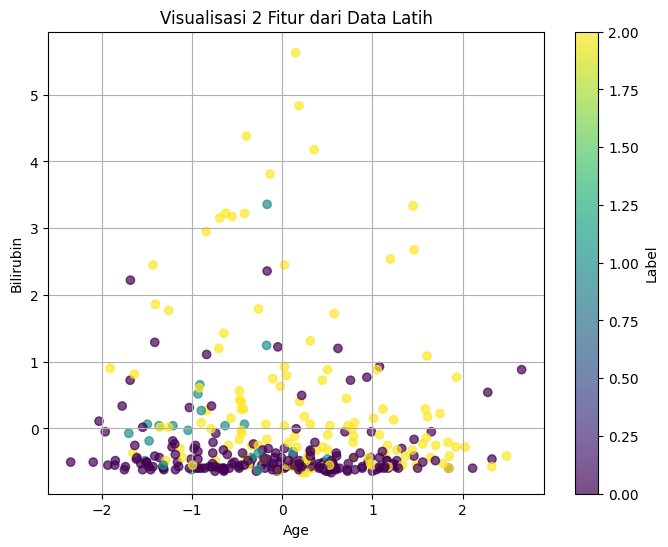
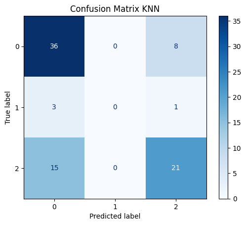

Ujian Tengah Semester#
Data Understading#
pip install ucimlrepo
Defaulting to user installation because normal site-packages is not writeable
Requirement already satisfied: ucimlrepo in c:\users\mybook z series\appdata\local\packages\pythonsoftwarefoundation.python.3.13_qbz5n2kfra8p0\localcache\local-packages\python313\site-packages (0.0.7)
Requirement already satisfied: pandas>=1.0.0 in c:\users\mybook z series\appdata\local\packages\pythonsoftwarefoundation.python.3.13_qbz5n2kfra8p0\localcache\local-packages\python313\site-packages (from ucimlrepo) (2.2.3)
Requirement already satisfied: certifi>=2020.12.5 in c:\users\mybook z series\appdata\local\packages\pythonsoftwarefoundation.python.3.13_qbz5n2kfra8p0\localcache\local-packages\python313\site-packages (from ucimlrepo) (2025.1.31)
Requirement already satisfied: numpy>=1.26.0 in c:\users\mybook z series\appdata\local\packages\pythonsoftwarefoundation.python.3.13_qbz5n2kfra8p0\localcache\local-packages\python313\site-packages (from pandas>=1.0.0->ucimlrepo) (2.2.5)
Requirement already satisfied: python-dateutil>=2.8.2 in c:\users\mybook z series\appdata\local\packages\pythonsoftwarefoundation.python.3.13_qbz5n2kfra8p0\localcache\local-packages\python313\site-packages (from pandas>=1.0.0->ucimlrepo) (2.9.0.post0)
Requirement already satisfied: pytz>=2020.1 in c:\users\mybook z series\appdata\local\packages\pythonsoftwarefoundation.python.3.13_qbz5n2kfra8p0\localcache\local-packages\python313\site-packages (from pandas>=1.0.0->ucimlrepo) (2025.2)
Requirement already satisfied: tzdata>=2022.7 in c:\users\mybook z series\appdata\local\packages\pythonsoftwarefoundation.python.3.13_qbz5n2kfra8p0\localcache\local-packages\python313\site-packages (from pandas>=1.0.0->ucimlrepo) (2025.2)
Requirement already satisfied: six>=1.5 in c:\users\mybook z series\appdata\local\packages\pythonsoftwarefoundation.python.3.13_qbz5n2kfra8p0\localcache\local-packages\python313\site-packages (from python-dateutil>=2.8.2->pandas>=1.0.0->ucimlrepo) (1.17.0)
Note: you may need to restart the kernel to use updated packages.
from ucimlrepo import fetch_ucirepo
# fetch dataset
cirrhosis_patient_survival_prediction = fetch_ucirepo(id=878)
# data (as pandas dataframes)
X = cirrhosis_patient_survival_prediction.data.features
y = cirrhosis_patient_survival_prediction.data.targets
# metadata
print(cirrhosis_patient_survival_prediction.metadata)
# variable information
print(cirrhosis_patient_survival_prediction.variables)
{'uci_id': 878, 'name': 'Cirrhosis Patient Survival Prediction', 'repository_url': 'https://archive.ics.uci.edu/dataset/878/cirrhosis+patient+survival+prediction+dataset-1', 'data_url': 'https://archive.ics.uci.edu/static/public/878/data.csv', 'abstract': 'Utilize 17 clinical features for predicting survival state of patients with liver cirrhosis. The survival states include 0 = D (death), 1 = C (censored), 2 = CL (censored due to liver transplantation).', 'area': 'Health and Medicine', 'tasks': ['Classification'], 'characteristics': ['Tabular'], 'num_instances': 418, 'num_features': 17, 'feature_types': ['Real', 'Categorical'], 'demographics': ['Age', 'Sex'], 'target_col': ['Status'], 'index_col': ['ID'], 'has_missing_values': 'yes', 'missing_values_symbol': 'NaN', 'year_of_dataset_creation': 1989, 'last_updated': 'Fri Nov 03 2023', 'dataset_doi': '10.24432/C5R02G', 'creators': ['E. Dickson', 'P. Grambsch', 'T. Fleming', 'L. Fisher', 'A. Langworthy'], 'intro_paper': {'ID': 296, 'type': 'NATIVE', 'title': 'Prognosis in primary biliary cirrhosis: Model for decision making', 'authors': 'E. Dickson, P. Grambsch, T. Fleming, L. Fisher, A. Langworthy', 'venue': 'Hepatology', 'year': 1989, 'journal': None, 'DOI': None, 'URL': 'https://www.semanticscholar.org/paper/db1487216b8a4b26f5e5078ea9109ac9d8355b65', 'sha': None, 'corpus': None, 'arxiv': None, 'mag': None, 'acl': None, 'pmid': None, 'pmcid': None}, 'additional_info': {'summary': "During 1974 to 1984, 424 PBC patients referred to the Mayo Clinic qualified for the randomized placebo-controlled trial testing the drug D-penicillamine. Of these, the initial 312 patients took part in the trial and have mostly comprehensive data. The remaining 112 patients didn't join the clinical trial but agreed to record basic metrics and undergo survival tracking. Six of these patients were soon untraceable after their diagnosis, leaving data for 106 of these individuals in addition to the 312 who were part of the randomized trial.", 'purpose': 'Cirrhosis results from prolonged liver damage, leading to extensive scarring, often due to conditions like hepatitis or chronic alcohol consumption. The data provided is sourced from a Mayo Clinic study on primary biliary cirrhosis (PBC) of the liver carried out from 1974 to 1984.', 'funded_by': 'Mayo Clinic', 'instances_represent': 'People', 'recommended_data_splits': None, 'sensitive_data': 'Gender, Age', 'preprocessing_description': '1. Drop all the rows where miss value (NA) were present in the Drug column\n2. Impute missing values with mean results\n3. One-hot encoding for all category attributes', 'variable_info': '1. ID: unique identifier\n2. N_Days: number of days between registration and the earlier of death, transplantation, or study analysis time in July 1986\n3. Status: status of the patient C (censored), CL (censored due to liver tx), or D (death)\n4. Drug: type of drug D-penicillamine or placebo\n5. Age: age in [days]\n6. Sex: M (male) or F (female)\n7. Ascites: presence of ascites N (No) or Y (Yes)\n8. Hepatomegaly: presence of hepatomegaly N (No) or Y (Yes)\n9. Spiders: presence of spiders N (No) or Y (Yes)\n10. Edema: presence of edema N (no edema and no diuretic therapy for edema), S (edema present without diuretics, or edema resolved by diuretics), or Y (edema despite diuretic therapy)\n11. Bilirubin: serum bilirubin in [mg/dl]\n12. Cholesterol: serum cholesterol in [mg/dl]\n13. Albumin: albumin in [gm/dl]\n14. Copper: urine copper in [ug/day]\n15. Alk_Phos: alkaline phosphatase in [U/liter]\n16. SGOT: SGOT in [U/ml]\n17. Triglycerides: triglicerides in [mg/dl]\n18. Platelets: platelets per cubic [ml/1000]\n19. Prothrombin: prothrombin time in seconds [s]\n20. Stage: histologic stage of disease (1, 2, 3, or 4)\n', 'citation': 'Fleming, Thomas R., and David P. Harrington. Counting processes and survival analysis. Vol. 625. John Wiley & Sons, 2013.'}}
name role type demographic \
0 ID ID Integer None
1 N_Days Other Integer None
2 Status Target Categorical None
3 Drug Feature Categorical None
4 Age Feature Integer Age
5 Sex Feature Categorical Sex
6 Ascites Feature Categorical None
7 Hepatomegaly Feature Categorical None
8 Spiders Feature Categorical None
9 Edema Feature Categorical None
10 Bilirubin Feature Continuous None
11 Cholesterol Feature Integer None
12 Albumin Feature Continuous None
13 Copper Feature Integer None
14 Alk_Phos Feature Continuous None
15 SGOT Feature Continuous None
16 Tryglicerides Feature Integer None
17 Platelets Feature Integer None
18 Prothrombin Feature Continuous None
19 Stage Feature Categorical None
description units missing_values
0 unique identifier None no
1 number of days between registration and the ea... None no
2 status of the patient C (censored), CL (censor... None no
3 type of drug D-penicillamine or placebo None yes
4 age days no
5 M (male) or F (female) None no
6 presence of ascites N (No) or Y (Yes) None yes
7 presence of hepatomegaly N (No) or Y (Yes) None yes
8 presence of spiders N (No) or Y (Yes) None yes
9 presence of edema N (no edema and no diuretic ... None no
10 serum bilirubin mg/dl no
11 serum cholesterol mg/dl yes
12 albumin gm/dl no
13 urine copper ug/day yes
14 alkaline phosphatase U/liter yes
15 SGOT U/ml yes
16 tryglicerides None yes
17 platelets per cubic ml/1000 yes
18 prothrombin time s yes
19 histologic stage of disease (1, 2, 3, or 4) None yes
print("\nBeberapa baris pertama dari fitur (X):")
print(X.head())
print("\nBeberapa baris pertama dari target (y):")
print(y.head())
Beberapa baris pertama dari fitur (X):
Drug Age Sex Ascites Hepatomegaly Spiders Edema Bilirubin \
0 D-penicillamine 21464 F Y Y Y Y 14.5
1 D-penicillamine 20617 F N Y Y N 1.1
2 D-penicillamine 25594 M N N N S 1.4
3 D-penicillamine 19994 F N Y Y S 1.8
4 Placebo 13918 F N Y Y N 3.4
Cholesterol Albumin Copper Alk_Phos SGOT Tryglicerides Platelets \
0 261 2.60 156 1718.0 137.95 172 190
1 302 4.14 54 7394.8 113.52 88 221
2 176 3.48 210 516.0 96.10 55 151
3 244 2.54 64 6121.8 60.63 92 183
4 279 3.53 143 671.0 113.15 72 136
Prothrombin Stage
0 12.2 4.0
1 10.6 3.0
2 12.0 4.0
3 10.3 4.0
4 10.9 3.0
Beberapa baris pertama dari target (y):
Status
0 D
1 C
2 D
3 D
4 CL
# Cek missing values di fitur
print("\nJumlah missing values per fitur:")
print(X.isnull().sum())
# Cek missing values di target
print("\nJumlah missing values di target:")
print(y.isnull().sum())
Jumlah missing values per fitur:
Drug 105
Age 0
Sex 0
Ascites 105
Hepatomegaly 105
Spiders 105
Edema 0
Bilirubin 0
Cholesterol 106
Albumin 0
Copper 106
Alk_Phos 106
SGOT 106
Tryglicerides 106
Platelets 7
Prothrombin 2
Stage 6
dtype: int64
Jumlah missing values di target:
Status 0
dtype: int64
Tipe Data Perkolom#
print("\nTipe data setiap fitur:")
print(X.dtypes)
Tipe data setiap fitur:
Drug object
Age int64
Sex object
Ascites object
Hepatomegaly object
Spiders object
Edema object
Bilirubin float64
Cholesterol object
Albumin float64
Copper object
Alk_Phos float64
SGOT float64
Tryglicerides object
Platelets object
Prothrombin float64
Stage float64
dtype: object
Jenis Nilai Setiap Kolom#
# Ambil fitur kategorikal
categorical_features = X.select_dtypes(include='object').columns.tolist()
# Tampilkan nilai unik tiap fitur kategorikal
for col in categorical_features:
print(f"\nNilai unik pada fitur '{col}':")
print(X[col].unique())
Nilai unik pada fitur 'Drug':
['D-penicillamine' 'Placebo' 'NaNN' nan]
Nilai unik pada fitur 'Sex':
['F' 'M']
Nilai unik pada fitur 'Ascites':
['Y' 'N' 'NaNN' nan]
Nilai unik pada fitur 'Hepatomegaly':
['Y' 'N' 'NaNN' nan]
Nilai unik pada fitur 'Spiders':
['Y' 'N' 'NaNN' nan]
Nilai unik pada fitur 'Edema':
['Y' 'N' 'S']
Nilai unik pada fitur 'Cholesterol':
['261' '302' '176' '244' '279' '248' '322' '280' '562' '200' '259' '236'
'281' 'NaNN' '231' '204' '274' '178' '235' '374' '252' '271' '395' '456'
'298' '1128' '175' '222' '370' '260' '296' '262' '210' '364' '314' '172'
'334' '383' '282' '361' '299' '482' '316' '257' '276' '614' '288' '416'
'498' '242' '329' '604' '216' '932' '373' '256' '427' '466' '174' '652'
'258' '320' '132' '558' '674' '394' '436' '315' '247' '448' '472' '250'
'263' '1600' '345' '408' '660' '325' '206' '353' '201' '420' '239' '460'
'400' '188' '303' '464' '212' '127' '120' '486' '528' '267' '458' '950'
'390' '636' '151' '251' '269' '268' '1775' '331' '578' '399' '426' '328'
'290' '346' '332' '556' '309' '1015' '586' '217' '168' '220' '358' '286'
'450' '317' '502' '233' '196' '1480' '376' '205' '283' '396' '478' '225'
'808' '187' '360' '1092' '308' '293' '347' '226' '266' '392' '223' '149'
'255' '382' '213' '232' '404' '1276' '608' '215' '372' '191' '518' '514'
'1336' '253' '442' '300' '354' '468' '350' '273' '387' '1712' '324' '227'
'246' '243' '193' '336' '414' '277' '375' '432' '356' '348' '318' '344'
'321' '572' '219' '338' '198' '304' '412' '291' '310' '294' '339' '546'
'194' '1000' '646' '275' '340' '342' '393' '335' '434' '576' nan]
Nilai unik pada fitur 'Copper':
['156' '54' '210' '64' '143' '50' '52' '79' '140' '46' '94' '40' '43'
'173' '28' '159' '588' '39' '41' '464' '558' '124' '53' '221' '209' '24'
'172' '114' '101' '82' '37' '201' '18' '150' '102' '105' '96' '122' '36'
'131' '19' '161' '68' '281' '58' '158' '262' '121' '88' '231' '73' '49'
'95' '74' '84' '20' '51' '17' '280' '207' '111' '199' '75' '13' '269'
'34' '154' '48' '29' '110' '178' '182' '33' '62' '77' '148' '145' '31'
'57' '38' '10' '14' '89' '103' '208' '81' '67' '129' '444' '25' 'NaNN'
'9' '42' '30' '205' '60' '35' '123' '27' '59' '86' '152' '32' '247' '290'
'243' '225' '219' '217' '4' '91' '80' '200' '44' '65' '76' '63' '358'
'251' '233' '267' '112' '26' '15' '227' '23' '108' '12' '11' '141' '72'
'115' '47' '412' '78' '71' '308' '139' '116' '380' '188' '45' '138' '16'
'22' '136' '130' '69' '220' '97' '70' '155' '107' '177' '196' '100' '90'
'234' '186' nan]
Nilai unik pada fitur 'Tryglicerides':
['172' '88' '55' '92' '72' '63' '213' '189' '143' '79' '95' '130' 'NaNN'
'96' '58' '128' '200' '123' '135' '83' '191' '230' '66' '166' '168' '195'
'86' '158' '101' '113' '64' '151' '118' '87' '111' '89' '50' '165' '71'
'178' '73' '93' '125' '219' '319' '94' '124' '188' '112' '133' '108'
'171' '185' '46' '184' '76' '80' '56' '309' '598' '243' '91' '104' '70'
'318' '272' '100' '74' '84' '174' '98' '155' '68' '69' '122' '102' '53'
'77' '52' '109' '78' '90' '156' '382' '149' '114' '210' '49' '85' '107'
'137' '232' '97' '175' '99' '105' '121' '152' '218' '134' '146' '103'
'106' '280' '126' '75' '205' '206' '140' '119' '180' '142' '154' '110'
'145' '62' '164' '432' '157' '194' '67' '57' '131' '224' '44' '177' '81'
'139' '322' '231' '214' '33' '120' '209' '260' '179' '117' '116' '193'
'229' '169' '242' '153' '127' '144' '59' '82' nan]
Nilai unik pada fitur 'Platelets':
['190' '221' '151' '183' '136' 'NaNN' '204' '373' '251' '302' '258' '71'
'244' '156' '295' '198' '224' '283' '209' '322' '336' '173' '214' '70'
'324' '421' '80' '144' '390' '124' '195' '286' '180' '273' '431' '311'
'102' '234' '563' '358' '226' '344' '203' '199' '474' '518' '356' '233'
'128' '362' '254' '213' '365' '216' '321' '228' '211' '329' '165' '178'
'430' '123' '261' '227' '265' '410' '225' '278' '268' '132' '236' '426'
'360' '385' '412' '81' '181' '447' '442' '200' '337' '145' '380' '188'
'401' '338' '312' '172' '119' '327' '110' '349' '348' '137' '316' '334'
'271' '141' '467' '266' '307' '438' '354' '207' '306' '256' '104' '182'
'238' '166' '453' '418' '121' '427' '445' '206' '252' '142' '318' '277'
'335' '253' '239' '330' '140' '301' '339' '270' '108' '487' '313' '269'
'160' '88' '212' '263' '361' '217' '493' '340' '149' '325' '175' '79'
'539' '471' '192' '164' '399' '382' '129' '117' '201' '381' '328' '332'
'514' '281' '126' '240' '259' '309' '298' '114' '223' '146' '423' '176'
'210' '231' '394' '139' '95' '284' '341' '319' '326' '282' '305' '185'
'297' '371' '303' '249' '317' '97' '264' '242' '248' '375' '296' '279'
'289' '153' '202' '372' '215' '280' '62' '255' '422' '143' '304' '291'
'122' '299' '293' '243' '246' '275' '288' '378' '331' nan '260' '130'
'721' '155' '475' '388' '191' '150' '167' '125' '171' '109' '314' '419'
'517' '432' '384' '274' '292' '92' '76' '120' '402' '425' '189' '193'
'219' '220' '162' '174' '350']
# Ambil nama-nama kolom numerik dan kategorikal
num_features = X.select_dtypes(include=['int64', 'float64']).columns.tolist()
cat_features = X.select_dtypes(include='object').columns.tolist()
print("Fitur numerik:", num_features)
print("Fitur kategorikal:", cat_features)
Fitur numerik: ['Age', 'Bilirubin', 'Albumin', 'Alk_Phos', 'SGOT', 'Prothrombin', 'Stage']
Fitur kategorikal: ['Drug', 'Sex', 'Ascites', 'Hepatomegaly', 'Spiders', 'Edema', 'Cholesterol', 'Copper', 'Tryglicerides', 'Platelets']
Data Preprosesing#
import sklearn
import pandas as pd
from sklearn.model_selection import train_test_split
from sklearn.preprocessing import StandardScaler, OneHotEncoder
from sklearn.impute import SimpleImputer
from sklearn.compose import ColumnTransformer
from sklearn.pipeline import Pipeline
# Cari missing values di fitur numerik lalu ganti dengan mean
num_imputer = SimpleImputer(strategy='mean')
X_num_imputed = pd.DataFrame(num_imputer.fit_transform(X[num_features]), columns=num_features)
# Cek missing values di fitur kategorikal lalu ganti dengan modus
cat_imputer = SimpleImputer(strategy='most_frequent')
X_cat_imputed = pd.DataFrame(cat_imputer.fit_transform(X[cat_features]), columns=cat_features)
# Proses gabungan fitur numerik dan kategorikal setelah mengganti missing values
X_imputed = pd.concat([X_num_imputed, X_cat_imputed], axis=1)
print(X_imputed.head())
Age Bilirubin Albumin Alk_Phos SGOT Prothrombin Stage \
0 21464.0 14.5 2.60 1718.0 137.95 12.2 4.0
1 20617.0 1.1 4.14 7394.8 113.52 10.6 3.0
2 25594.0 1.4 3.48 516.0 96.10 12.0 4.0
3 19994.0 1.8 2.54 6121.8 60.63 10.3 4.0
4 13918.0 3.4 3.53 671.0 113.15 10.9 3.0
Drug Sex Ascites Hepatomegaly Spiders Edema Cholesterol Copper \
0 D-penicillamine F Y Y Y Y 261 156
1 D-penicillamine F N Y Y N 302 54
2 D-penicillamine M N N N S 176 210
3 D-penicillamine F N Y Y S 244 64
4 Placebo F N Y Y N 279 143
Tryglicerides Platelets
0 172 190
1 88 221
2 55 151
3 92 183
4 72 136
# Cek missing values di fitur
print("\nJumlah missing values per fitur:")
print(X_imputed.isnull().sum())
Jumlah missing values per fitur:
Age 0
Bilirubin 0
Albumin 0
Alk_Phos 0
SGOT 0
Prothrombin 0
Stage 0
Drug 0
Sex 0
Ascites 0
Hepatomegaly 0
Spiders 0
Edema 0
Cholesterol 0
Copper 0
Tryglicerides 0
Platelets 0
dtype: int64
# Standarisasi fitur numerik (digunakan untuk normalisasi yang nanti nilainya akan berada di antara 0 dan 1)
scaler = StandardScaler()
X_num_scaled = pd.DataFrame(scaler.fit_transform(X_num_imputed), columns=num_features)
# Standarisasi fitur kategorikal (menggunakan OneHotEncoder untuk mengubah kategori menjadi representasi numerik)
encoder = OneHotEncoder(handle_unknown='ignore', sparse_output=False)
X_cat_encoded = pd.DataFrame(encoder.fit_transform(X_cat_imputed), columns=encoder.get_feature_names_out(cat_features))
# Proses gabungan fitur numerik dan kategorikal (Sesudah Strandarisasi)
X_processed = pd.concat([X_num_scaled, X_cat_encoded], axis=1)
print(X_processed.head())
Age Bilirubin Albumin Alk_Phos SGOT Prothrombin Stage \
0 0.768941 2.562152 -2.114296 -0.143350 0.314753 1.441846 1.115596
1 0.546706 -0.481759 1.513818 2.931464 -0.184766 -0.129360 -0.027751
2 1.852567 -0.413611 -0.041088 -0.794408 -0.540952 1.245445 1.115596
3 0.383244 -0.322748 -2.255651 2.241950 -1.266205 -0.423961 1.115596
4 -1.210972 0.040704 0.076708 -0.710453 -0.192331 0.165241 -0.027751
Drug_D-penicillamine Drug_NaNN Drug_Placebo ... Platelets_721 \
0 1.0 0.0 0.0 ... 0.0
1 1.0 0.0 0.0 ... 0.0
2 1.0 0.0 0.0 ... 0.0
3 1.0 0.0 0.0 ... 0.0
4 0.0 0.0 1.0 ... 0.0
Platelets_76 Platelets_79 Platelets_80 Platelets_81 Platelets_88 \
0 0.0 0.0 0.0 0.0 0.0
1 0.0 0.0 0.0 0.0 0.0
2 0.0 0.0 0.0 0.0 0.0
3 0.0 0.0 0.0 0.0 0.0
4 0.0 0.0 0.0 0.0 0.0
Platelets_92 Platelets_95 Platelets_97 Platelets_NaNN
0 0.0 0.0 0.0 0.0
1 0.0 0.0 0.0 0.0
2 0.0 0.0 0.0 0.0
3 0.0 0.0 0.0 0.0
4 0.0 0.0 0.0 0.0
[5 rows x 776 columns]
Modeling#
from sklearn.model_selection import train_test_split
# Pastikan target numerik
y_encoded = y[y.columns[0]].astype('category').cat.codes
# Bagi data: 80% training, 20% testing
X_train, X_test, y_train, y_test = train_test_split(X_processed, y_encoded, test_size=0.2, random_state=42)
import matplotlib.pyplot as plt
# Ambil 2 fitur pertama dari data latih (asumsi X_train adalah DataFrame)
feature_1 = X_train.iloc[:, 0]
feature_2 = X_train.iloc[:, 1]
# Buat scatter plot berdasarkan label (y_train)
plt.figure(figsize=(8, 6))
scatter = plt.scatter(feature_1, feature_2, c=y_train, cmap='viridis', alpha=0.7)
plt.title("Visualisasi 2 Fitur dari Data Latih")
plt.xlabel(X_train.columns[0])
plt.ylabel(X_train.columns[1])
plt.colorbar(scatter, label='Label')
plt.grid(True)
plt.show()

from sklearn.neighbors import KNeighborsClassifier
knn = KNeighborsClassifier(n_neighbors=3)
# Latih model dengan data latih
knn.fit(X_train, y_train)
KNeighborsClassifier(n_neighbors=3)In a Jupyter environment, please rerun this cell to show the HTML representation or trust the notebook.
On GitHub, the HTML representation is unable to render, please try loading this page with nbviewer.org.
KNeighborsClassifier(n_neighbors=3)
from sklearn.metrics import accuracy_score, classification_report, confusion_matrix
# Prediksi data uji
y_pred = knn.predict(X_test)
# Evaluasi akurasi
print("Akurasi:", accuracy_score(y_test, y_pred))
# Laporan klasifikasi lengkap
print("\nClassification Report:")
print(classification_report(y_test, y_pred))
# Confusion matrix
print("\nConfusion Matrix:")
print(confusion_matrix(y_test, y_pred))
Akurasi: 0.6785714285714286
Classification Report:
precision recall f1-score support
0 0.67 0.82 0.73 44
1 0.00 0.00 0.00 4
2 0.70 0.58 0.64 36
accuracy 0.68 84
macro avg 0.46 0.47 0.46 84
weighted avg 0.65 0.68 0.66 84
Confusion Matrix:
[[36 0 8]
[ 3 0 1]
[15 0 21]]
C:\Users\MyBook Z Series\AppData\Local\Packages\PythonSoftwareFoundation.Python.3.13_qbz5n2kfra8p0\LocalCache\local-packages\Python313\site-packages\sklearn\metrics\_classification.py:1565: UndefinedMetricWarning: Precision is ill-defined and being set to 0.0 in labels with no predicted samples. Use `zero_division` parameter to control this behavior.
_warn_prf(average, modifier, f"{metric.capitalize()} is", len(result))
C:\Users\MyBook Z Series\AppData\Local\Packages\PythonSoftwareFoundation.Python.3.13_qbz5n2kfra8p0\LocalCache\local-packages\Python313\site-packages\sklearn\metrics\_classification.py:1565: UndefinedMetricWarning: Precision is ill-defined and being set to 0.0 in labels with no predicted samples. Use `zero_division` parameter to control this behavior.
_warn_prf(average, modifier, f"{metric.capitalize()} is", len(result))
C:\Users\MyBook Z Series\AppData\Local\Packages\PythonSoftwareFoundation.Python.3.13_qbz5n2kfra8p0\LocalCache\local-packages\Python313\site-packages\sklearn\metrics\_classification.py:1565: UndefinedMetricWarning: Precision is ill-defined and being set to 0.0 in labels with no predicted samples. Use `zero_division` parameter to control this behavior.
_warn_prf(average, modifier, f"{metric.capitalize()} is", len(result))
from sklearn.metrics import ConfusionMatrixDisplay
ConfusionMatrixDisplay.from_predictions(y_test, y_pred, cmap='Blues')
plt.title("Confusion Matrix KNN")
plt.show()
